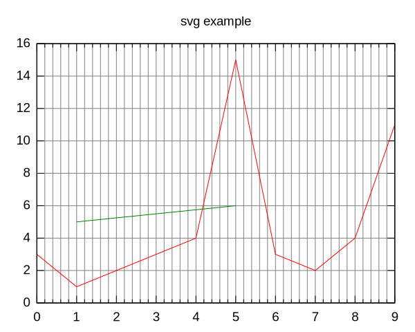

<!-- <iframe width="100%" height="400" scrolling="no" frameborder="no" src="https://w.soundcloud.com/player/?visual=true&url=https%3A%2F%2Fapi.soundcloud.com%2Ftracks%2F293&show_artwork=true"></iframe>
<iframe class="vine-embed" src="https://vine.co/v/Ml16lZVTTxe/embed/simple" width="600" height="600" frameborder="0"></iframe><script async src="https://platform.vine.co/static/scripts/embed.js"></script>
<a data-flickr-embed="true" href="https://www.flickr.com/photos/bees/2362225867/" title="Bacon Lollys by ‮‭‬bees‬, on Flickr"></a><script async src="https://embedr.flickr.com/assets/client-code.js" charset="utf-8"></script> -->

<!-- <script src="https://gist.github.com/benjchristensen/1148374.js"></script>


<link rel="alternate" type="application/json+oembed"
  href="https://api.app.net/oembed?url=https%3A%2F%2Falpha.app.net%2Fbreakingnews%2Fpost%2F9153521"
  title="App.net oEmbed" /> -->

<!-- <iframe max-width="400px" max-height="400" scrolling="yes" frameborder="yes" src="https://robin.localtunnel.me/latex?inputText=\\int_{-\\infty}^\\infty \\hat f(\\xi)\,e^{2 \\pi i \\xi x} \\,d\\xi"></iframe>" -->

